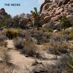

Quick Takes (March 2020)
Hi everyone, and welcome to our latest installment of Quick Takes!
It saddens me to say that not much has changed since last month, though at the very least, the comfort of listening to music has surely helped during this unprecedented pandemic. Which is why I stepped into my comfort zone with this month's picks, choosing a handful of new releases that follow a similar stylistic aesthetic. My personal favorite is Nap Eyes' stellar fourth album, a band who's records have gradually gotten better. Staff writer Ethan also joined in with a few words about the latest Melt Yourself Down, who, I might add, has been writing some great content in the last month (which you should check out in our 'Reviews' section). And then there's Sean Caldwell's take on the Necks' 21st LP, which stacks up among their best.
What were your favorite albums during the month of March? Anything we didn't get to review that we should've? You can always reach us on Facebook, or on our official Twitter page.
 Dogleg
Dogleg
Melee
(Triple Crown Records)
Melee, Dogleg's cathartic debut full-length, sounds like a celebration and a lamentation. The Detroit four-piece lay their emotions bare over a visceral, 35-minute onslaught that demands a communal response. The band plays loud and raw with great physicality, both figuratively and literally (vocalist Alex Stoitsiadis regularly does cartwheels during their live shows), though it wouldn't resonate as strongly if their feelings of neglect and worthlessness weren't so life-affirming. This is emo to the ninth level, after all, but they're also tunesmiths who explore outside of the genre's worst cliches. Dogleg also have a sense of humor, and as songs like Fox and Wartortle attest (both references to Nintendo characters, one of the two shout-outs to the iconic gaming company in this month's takes), they replicate the sheer punk theatrics of bands like Dramarama (you know the song I'm talking about) without taking themselves that seriously. But do they keep that momentum throughout Melee? Well, not exactly. For music that's this visceral, every heart-rending confession can feel like a victory lap—but even the best runners have to take a breather to renew their energy. [7/10] Juan Edgardo Rodríguez
 Empty Country
Empty Country
Empty Country
(Get Better Records)
When Joe D'Agostino quietly disbanded Cymbals Eat Guitars via twitter, it felt like an unceremonious defeat for a band that never got its place in the sun. Fortunately, D'Agostino had been busy writing new material for his new solo project Empty Country since late-2017 (yes, taken from one of CEG's best tracks)—which makes the transition all the more heartbreaking, but ultimately, promising. One's quick to make the obvious correlations when listening to his self-titled debut: the wordy observations, the impassioned sentiments, the crunchy guitar breakdowns. But D'Agostino does draw some clear distinctions, opting for an Americana-tinged folk-rock album that is just as melodically arresting. The subjects here are uncompromisingly bleak, hanging on to hopeful expectations—whether he's revisiting his wife's week-long biopsy report (Ultrasound), ruminating on characters struggling with opioid addiction (SWIM) , or narrating absurdist fables (Becca). These songs work as an extension of himself—coming from one of indie rock's most literate songwriters—delivered with thoughtful compassion and no shortage of ambition. [8/10] Juan Edgardo Rodríguez
 Mandy Moore
Mandy Moore
Silver Landings
(Verve Forecast Records)
During the first decade of the 2000s, Mandy Moore was a dominating force of adult contemporary whose albums got progressively stronger the less they sold. And then, radio silence. After a decade-long absence, the This Is Us TV star is back with a mellow, introspective set of old-fashioned adult contemporary topped with a dollop of '70s-inspired California pop. The perked-up midtempo of I'd Rather Lose and Easy Target find her contemplating her morals and her newfound sense of freedom, conveying intimate snapshots over straightforward songcraft that goes down easy. The quieter moments, though, are a mixed bag—whereas she bares all on the folk-driven soft rock of Forgiveness (a career highlight), the feel-good, made-for-TV segments stride of If That's What It Takes is a bit of a bore. Overall, Silver Landings finds Moore regaining her footing. And in the realm of television actors writing music, it's still no contest—as much as Zooey Deschanel believes that's not the case. [7/10] Juan Edgardo Rodríguez
 Melt Yourself Down
Melt Yourself Down
100% Yes
(Decca Records)
The opening notes of the saxophone on Melt Yourself Down’s latest album bolt across whatever speaker system you’re listening to, as if it was attacking the listener. As soon as it launches into that first track, Boot and Spleen, you realize that it may not be quite the exciting assault that you expected. While the group transitioned to Decca Records after 2016's Last Evenings on Earth, the style that they’ve been concocting for a while comes into clear focus here. Taking punk, funk, and jazz into a swirl of anger, joy, and chaos, this album gets close to letting you into that series of emotions (see the tight Born In the Manor) but slips up whenever nearly gets there. The shrill production manned by Ben Hillier over-amplifies the percussion and bass textures, making the entire project muddy in a way that can’t be intentional. While the joy occasionally breaks through (the glitchy From the Mouth is a blast), Melt Yourself Down kneecap themselves repeatedly on 100% Yes. [6/10] Ethan Gordon
 Nap Eyes
Nap Eyes
Snapshot of a Beginner
(Jagjaguwar)
Snapshot of a Beginner, Nigel Chapman's latest self-examination disguised as an album, is rife with monologues. The former research scientist-turned-full-time indie rocker has made art out of sharing insight into his internal thoughts for four albums now. But where Chapman excels where others fail is that he's endearing about his self-deprecation, often conveying truths that read as casual as his relaxed arrangements. He also likes intertwining astronomical reasoning and science into his contemplating, because why wouldn't he. On Primordial Soup, he wonders about the flow of the universe because it brightens his mood, whereas on Dark Link, he humanizes the famed Legend of Zelda character in such a way that you wouldn't even tell if you didn't read the title. Chapman's mind operates that way—sometimes logical, sometimes vulnerable, always looking to improve himself. And this time, he's even made an effort to jam a little less in favor of writing catchy hooks, like in the punchy, shoegaze-leaning If You Were in Prison. It turns out he's really good at that, too. [8/10 - Believe the Hype] Juan Edgardo Rodríguez
The Necks
Three
(Northern Spy Records)
The dichotomy of Bloom is striking. Introducing Three, the 21st LP by Australian instrumental trio The Necks, Bloom is a little over 21-minutes of relentless noise pool of percussion and clatter that’s somehow relaxed by the gently pressed piano keys that methodically pierce its surface, a contrast that rests the mind over the length of this track when it might otherwise induce anxiety. While not quite offering respite from the motion of Bloom, Lovelock, which was composed in tribute to Damien Lovelock of The Celibate Rifles, is a chilling prayer, each member of the group (each Neck) offering disparate phrases and thunder, chimes, and howls. Comparable to He Loved Him Madly, which was Miles Davis’ lengthy meditation on the life of Duke Ellington, Lovelock’s shapeless beginnings eventually find rhythm, the initial chaos of emotion gaining an anchor as percussionist Tony Buck keeps his kick drum and his hi-hat unified. A somber bass tone is plucked by Lloyd Swanton for the entirety of Further, where pianist Chris Abrahams mixes traditional keys with organ as the continual strut leaves time for the ears to distill and enjoy the tones and melodies that ensue. [8/10] Sean Caldwell
15 April, 2020 - 04:12 — No Ripcord Staff